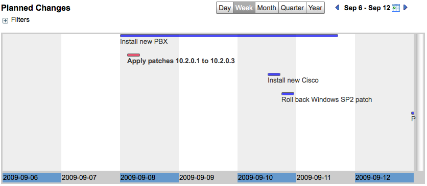
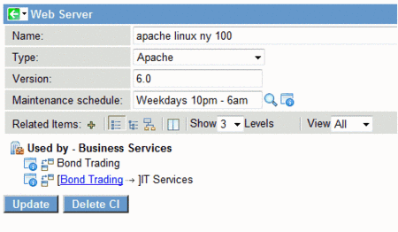

Maintenance Schedules Support
| |
Note: This article applies to Fuji. For more current information, see Create Blackout and Maintenance Schedules at http://docs.servicenow.com
The ServiceNow Wiki is no longer being updated. Please refer to http://docs.servicenow.com for the latest product documentation. |
Contents
1 Overview
The Maintenance Schedules feature enables you to display scheduled maintenance for configuration items in a timeline format, and marks change requests that fall outside the allowed maintenance period. Planned maintenance is displayed in a calendar format that can be configured to show daily to yearly views. Maintenance activity is represented by a span, which is displayed as a horizontal bar on the timeline and can appear in any color. Spans for requested changes that occur outside their allowed maintenance periods appear in red on the timeline.
|  |
{kind=link}
2 Change Collision
For instances with the Collision Detector activated, blackout and maintenance schedules have condition fields. This allows blackout or maintenance schedules to be applied only to CIs that match a certain set of conditions.
3 Creating Maintenance Schedules
A Weekends schedule is included in the base system. This schedule runs from 00:00:00 on Saturday until 23:59:59 on Sunday and repeats every week. It may be helpful to refer to this example when setting up your own custom maintenance schedules.
These properties are available to help define schedule entries: glide.schedules.repeat_nth and glide.schedules.fifth. For details about the properties, see Available System Properties..
To create additional maintenance schedules:
- Navigate to Change > Maintenance Windows and click New to create a new schedule.
- Type a unique name for the schedule.
- Select the appropriate time zone.
- Save the schedule form and then click New in the Schedule Entries related list to add times when maintenance should take place. For details on how to create schedule entries, see Schedules.
- Use the Condition field to apply the maintenance schedule only to particular CIs, if desired.
- Repeat this procedure for each different maintenance schedule needed.
When you create a new maintenance schedule from a change record, it is created in the cmn_schedule table. When you create a maintenance window, it is created in the cmn_schedule_maintenance table, which is the table that is used for checking for schedule conflicts. When selecting a maintenance window in the CI Maintenance Schedule field, only schedules that were added using maintenance windows are evaluated for conflicts in change.
4 Assigning Maintenance Schedules to Configuration Items
- Locate the configuration item record by navigating to the appropriate module under the Configuration application menu. For example, if you want to locate a web server, look under Configuration > Web Servers.
- If you have not already done so, personalize the form to add the Maintenance schedule field.
- Set the value of the Maintenance schedule field to one of the configured maintenance schedules.
You will be able to choose schedules of the type maintenance.
- Save the CI.
|  |
{kind=link}
5 Outside Maintenance Schedule on Change Requests
Personalize the change request form and add the Outside maintenance schedule field. This check box is informational and indicates whether planned scheduling (consisting of the planned start date and planned end date) for the change occurs outside the maintenance window. The instance sets this value and disregards any user changes to this checkbox.
This field is set to true if:
- The CI associated with the change, if any, is compared to the maintenance schedule, if any, and the planned dates for the change occur outside the maintenance schedule.
- Likewise Affected CIs, if any, for the change request will be checked against their own maintenance schedules, if any.
| |
Note: Only the maintenance window for the primary CI or affected CIs are checked; the upstream/downstream CIs are not checked. |
When you save a change request that is outside the maintenance schedule, a warning appears for each CI (primary or affected) that is outside the maintenance schedule, if the change request was previously not marked as outside the maintenance schedule.
6 Change Schedule
Bring up the change schedule timeline by navigating to Change > Change Schedule. The timeline shows all active change requests by planned start and end times. Any change requests that are outside the maintenance window are colored red on the display. Change requests that have an approval status of Rejected are displayed in gray.
For instructions on using timelines, see Using Timelines.
7 Updating Maintenance Schedules
When you update maintenance schedule entries, check the Outside maintenance schedule field for change requests that might have been forced outside the maintenance period and that require an update. An async business rule runs on the Schedule Entry table when maintenance schedules are updated to verify the Outside maintenance schedule field on change requests that have configuration items (primary or affected) that use that schedule. As this is done asynchronously (so as not to keep the user waiting), specific warning messages are not issued for each change request as they are when change requests are individually updated. However, if any CIs use the maintenance schedule, a single message is issued indicating that this verification will occur.
8 Transferring Maintenance Schedules between Instances
You must manually export maintenance schedule records because the system does not track them in update sets. See Exporting and Importing XML Files.
To transfer maintenance schedules between instances:
- Export records from the following tables as XML files.
- Maintenance Schedule [cmn_schedule_maintenance]
- Schedule Entry [cmn_schedule_span].
- Import the records on the target instance.